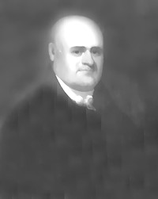

John Maley
According to traditional sources, John Maley was born in Alcase, France in 1743. He emigrated to New York about 1766 and entered the import business.
 Within a few years, he had married Christina or Catherine Tremper. Their daughter was baptized in the Albany Dutch church in November 1769. John remained an Albany church member for the remainder of his life.
By that time, these Maleys had become residents of Albany. In October 1773, John Maley gave testimony about his background before the Albany city council, stated that he had paid Albany taxes for the last five years, and that he had voted in years passed.
From the start of hostilities in 1775, he lent financial support to the American cause. In November 1779, he marched with the city militia under Isaac De Foreest to Stone Arabia. Beginning in 1779, his Albany property was valued on city assessment rolls. In 1781, he was one of a number of newcomers who purchased the Freedom of Albany. At that time, he was identified as a merchant. Maley's associate was Johannes Cuyler who later would marry Hannah Maley.
During the 1780s, he was able to acquire hundreds of acres of newly available lands in the central and western parts of New York State from Revolutionary War soldiers.
By 1790, he had settled into a large house on North Market Street. His holdings included a store, stables, and storehouses spread over several urban lots. His household and enterprises were serviced by a number of slaves. Maley's landmark property was lost when an important section of the core part of the city was destroyed by the fire of 1793. It was said that he lost property worth over $250,000 in the fire. By 1800, he seems to have rebuilt at that location.
A pillar of the Albany business community for several decades, he was one of the first directors of the Bank of Albany which was located next door to Maley's Market Street home. He also had a country seat located in what is today's Loudonville.
John Maley died in November 1811. As his wife probably had passed on, Letters of administration were granted to his daughter and her husband on his estate in June 1812.
Protrait painted by Ezra Ames and dated 1812 along with a portrait of his wife.